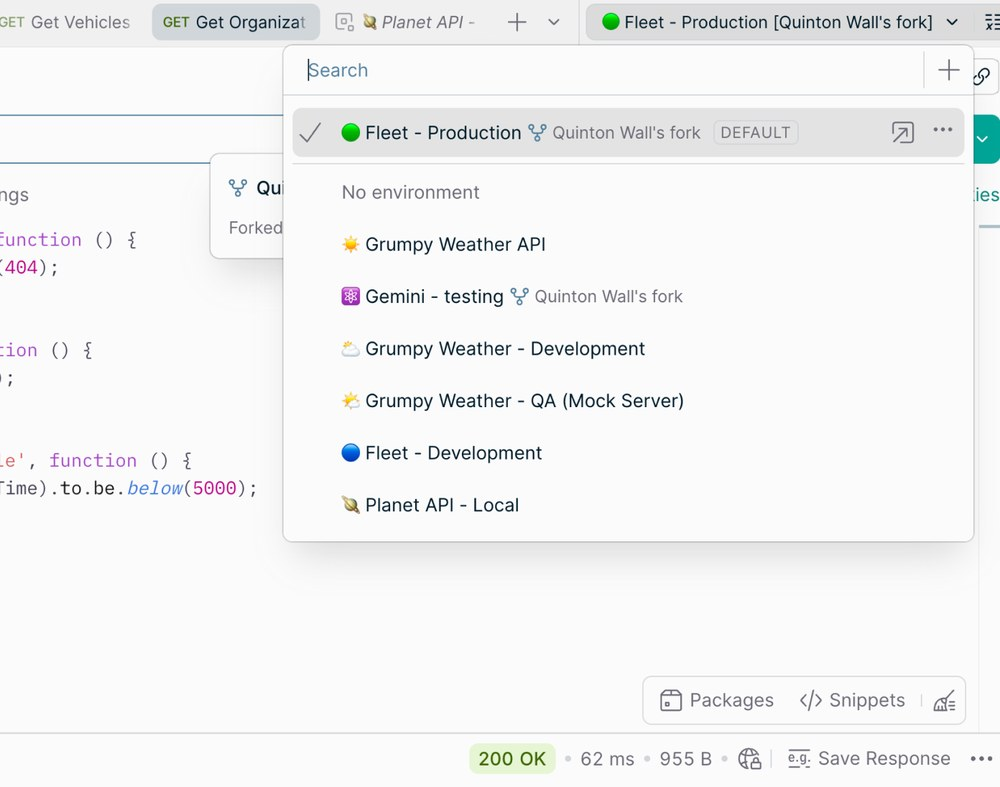

Mise en pratique
Atelier
Kit
Matériel & logiciel
Physique
- Terminal Ingenico Lane 5000
- Cartes de test contact + sans contact
- Tickets / journaux terminaux
Logiciel
- Postman
-
Fichiers atelier :
atelier/j1-postman/
Rail A · Physique
Init · transactions · télécollecte

Ancrer le cycle de vie réel d’un TPE.
Cycle terminal
Cliquez — le cartouche détaille chaque temps
Scénarios terrain
Test sur un terminal de paiement
Prioritaires
- Paiement contact (puce + PIN) — approve
- Paiement sans contact — même montant
- Decline (carte / scénario de test prévu)
- Télécollecte après 2–3 ops
Selon config dispo
- Annulation / contrepassation
- Remboursement
- Montant sous / au-dessus seuil CL (CDCVM / PIN)
- Échec réseau → comportement offline / rejet
- Double présentation / timeout lecteur
Rail B · Logiciel
Postman — Auth approve / decline
Client API pour envoyer des requêtes HTTP et lire les réponses — ici, pour jouer une autorisation mock (approve / decline) et inspecter les champs du message.

Lire · placer · comparer
Cliquez chaque étape
Fichiers fournis
-
mock_auth_server.py— serveur mock Auth (port 8787) -
J1-Auth-Approve-Decline.postman_collection.json— collection Postman (APPROVE / DECLINE)
Aussi joints au support étudiant.
Utiliser avec Postman (ISO 8583 packé)
-
Lancer le mock :
python3 mock_auth_server.py(depuisatelier/j1-postman/) - Import collection (ou saisie manuelle) — réimporter après mise à jour
Synthèse
Auth · clearing · réconciliation · règlement
Chrono : Auth → compensation (chambre / netting) → règlement des positions nettes.
| Étape | Rôle | Forme typique |
|---|---|---|
0100 |
Autorisation | Message online |
0220 / fichiers clearing
|
Compensation (opérations) → chambre / scheme | Message et/ou fichier |
05xx |
Réconciliation des totaux | Message (quand utilisé) — pas le règlement |
| Settlement | Règlement des positions nettes | Souvent hors ISO 8583 (banque de settlement, RTGS…) |
Linux
-
Télécharger :
postman.com/downloads
(Linux 64-bit) — ou
sudo snap install postman -
Installation snap : déjà faite par la commande ·
sinon dézipper l’archive et lancer
./Postman -
Lancement : menu Applications →
Postman, ou
postmandans un terminal
Windows
- Télécharger : postman.com/downloads (Windows 64-bit)
-
Installation : exécuter le
.exe· suivre l’assistant - Lancement : menu Démarrer → Postman
Compte gratuit optionnel — inutile pour lancer les requêtes mock de l’atelier.